COMIENZOS
Lollapalooza: es un festival musical de los Estados Unidos que originalmente ofrecía bandas de rock alternativo, indie y punk rock; también hay actuaciones cómicas y de danza. Concebido en 1991 por Perry Farrell, cantante de Jane's Addiction, Lollapalooza se realizó anualmente hasta 1997 y fue revivido en 2003. El festival encapsula la cultura joven de los años 1990. "Generación Lollapalooza" es a veces sinónimo de "Generación X".
El Lollapalooza inaugural estuvo de gira por Estados Unidos y Canadá desde mediados de julio hasta finales de agosto de 1991. El cartel inaugural del Lollapalooza estaba compuesto por artistas del rock alternativo (como Siouxsie and the Banshees, que fueron los segundos artistas principales detrás de Jane's Addiction), música industrial (como Nine Inch Nails) y rap (Ice-T rapeó y usó la plataforma para lanzar Body Count, su banda de heavy metal). El estreno en Phoenix, Arizona, el 18 de julio de 1991, fue cubierto por un reportaje en MTV, que finalizó con este comentario "Lollapalooza podría ser la gira del verano"; la gira terminó en Seattle en agosto. 28 de 1991.
LA LLEGADA A LATAM
La primera aparición oficial de Lollapalooza fuera de Estados Unidos fue en 2011 en Santiago, Chile, siendo el primer país en Latinoamérica en recibir dicho evento mundial, sumándose una versión brasileña desde 2012. Existe una versión argentina anual en Buenos Aires desde 2014. Se anunció que el primer Festival Lollapalooza se llevaría a cabo en Europa en septiembre de 2015 en Berlín, en el histórico Aeropuerto de Tempelhof. En julio de 2015, se confirmó una nueva versión para septiembre de 2016 en Bogotá, Colombia en la plaza de eventos del Parque Metropolitano Simón Bolívar. Sin embargo, fue cancelado en julio de 2016.
El 19 de noviembre de 2010, Farrell anunció que el evento se realizaría por primera vez en veinte años fuera de Estados Unidos. La ciudad elegida fue Santiago, en Chile, donde el festival se realizó los días 2 y 3 de abril de 2011. En Chicago, Estados Unidos, se realizó del 5 al 7 de agosto del mismo año.7 El 4 de abril de 2011, luego de una exitosa versión con más de 100.000 personas en Chile, Farrell y la productora Lotus anunciaron que se realizaría otra versión del festival en Chile en abril de 2012.

LA EXPANSION
En julio de 2011 se confirmó lo dicho al terminar la versión chilena, confirmando que desde 2011 se realizaría una versión anual en Chile, siendo la siguiente los días 31 de marzo y 1 de abril de 2012, además de una versión brasileña en São Paulo los días 7 y 8 de abril del mismo año.
En 2012 se confirma una nueva edición en Tel Aviv en Israel, la cual se realizó el 20, 21 y 22 de agosto de 2013 en el Yarkon Park, además de agregar un tercer día en Brasil, los días 29, 30 y 31 de marzo de 2013, y el 6 y 7 de abril en Santiago de Chile. Cabe destacar que esta versión, a pesar de contar con un día menos, tuvo una cantidad de artistas mayor que la de Brasil.